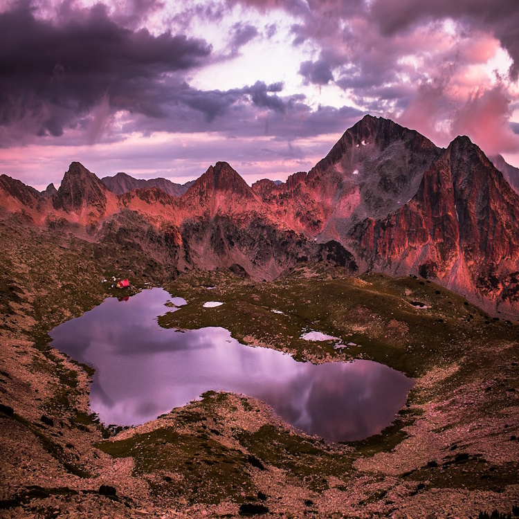
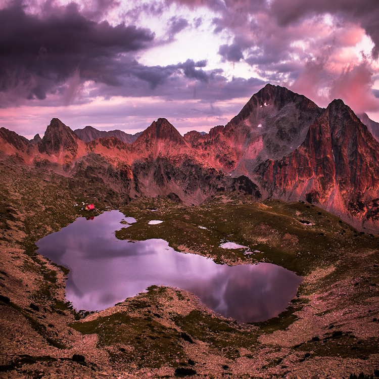
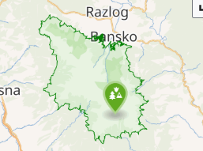

Pirin National Park
|
Pirin National Park (Bulgarian: Национален парк "Пирин"), originally named Vihren National Park, covering the larger part of the Pirin Mountains in southwestern Bulgaria, spanning an area of 403.56 square kilometers (155.82 mi2). It is one of the three national parks in the country, the others being Rila National Park and Central Balkan National Park. The park was established in 1962 and its territory was expanded several times since then. Pirin National Park was declared a UNESCO World Heritage Site in 1983. The elevation varies from 950 meters (3,120 ft) to 2,914 meters (9,560 ft) at Vihren, Bulgaria's second highest summit and the Balkans' third. The park is situated in Blagoevgrad Province, the nation's southwesternmost region, on the territory of seven municipalities: Bansko, Gotse Delchev, Kresna, Razlog, Sandanski, Simitli, and Strumyani. There are no populated places within its territory. Two nature reserves are located within the boundaries of Pirin National Park: Bayuvi Dupki–Dzhindzhiritsa and Yulen. Bayuvi Dupki–Dzhindzhiritsa is among the oldest in Bulgaria, established in 1934 and is included in the World Network of Biosphere Reserves under the UNESCO Man and Biosphere Programme.[1] The whole territory is part of the network of nature protection areas of the European Union, Natura 2000. |
 |
History And Administration
|
Pirin National Park was established on 18 November 1962 in order to preserve the natural ecosystems and landscapes along with their plant and animal communities and habitats.[2][3] Originally named Vihren National Park, the protected area initially covered 67.36 km2. Its territory was expanded several times until it reached its current area of 403.56 km2 in 1999.[3][4] In 1983, Pirin National Park was added to the list of UNESCO World Heritage Sites as an area of outstanding natural importance.[5] By the Constitution of Bulgaria, the park is exclusively state-owned.[6] According to the classification of the International Union for Conservation of Nature the park falls within management category II (national park) with main objective protecting functioning ecosystems while allowing human visitation and its supporting infrastructure. The entire territory of the park is included in the European Union network of nature protection areas Natura 2000.[7] Pirin National Park is listed as an important bird and biodiversity area by BirdLife International.[8] |
 |